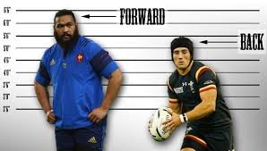

¿Que es el rugby?
El rugby es un deporte de equipo de contacto que se juega entre dos equipos de 15 jugadores (o 7 en la modalidad Seven) sobre un campo rectangular. El objetivo del juego es llevar el balón ovalado a la zona de gol del equipo contrario y apoyarlo en el suelo para marcar puntos.
Backs y fowards
En rugby, los términos "back" y "forward" se refieren a dos grupos de jugadores con roles y responsabilidades diferentes. Los forwards (delanteros) son los jugadores del 1 al 8, también conocidos como "pack" por formar la melé. Los backs (línea de tres cuartos) son los jugadores del 9 al 15, que se ubican detrás del scrum.
Aca abajo podes ver a las posiciones de los 3/4 o backs
Medio scrum

El medio scrum (numero 9) en el rugby que actúa como nexo entre los forwards (delanteros) y los backs (defensores). Esta posición se encuentra al inicio de la línea de tres cuartos y su principal función es introducir la pelota en el scrum y recuperarla después, además de dirigir el ritmo y el juego.
Apertura
En rugby, el apertura (número 10) es el creador de juego, responsable de dirigir el ataque y tomar decisiones estratégicas. Es el primer jugador que recibe el balón tras un scrum o maul, y desde allí decide si patear, pasar o correr. También suele ser el principal pateador del equipo y puede liderar los ataques.
1pr Centro
1pr cetro (numero 12), generalmente es el más potente y pesado de los dos centros. Participa activamente en el juego, tanto en ataque como en defensa. Puede ser el primer receptor del balón después del apertura o en el breakdown. Es crucial para atraer a la defensa rival y abrir espacios para el 2do centro.
2do centro
Este lleva el numero 13, suele ser más rápido que el centro interior. Tiene la tarea de correr por la banda, buscando romper la línea de defensa. Es un jugador clave en el juego de ataque, capaz de recibir el balón y avanzar con el, generalmente a través del centro interior. También debe realizar tackles uno contra uno en defensa.
Wing
Cada equipo posee dos wings o alas (izquierdo y derecho), que integran el grupo de tres-cuartos o backs, ubicándose como últimos jugadores en cada uno de los laterales. Dar apoyo a sus compañeros durante el ataque y respaldarlos en la defensa, sobre todo al full-back.
full back
es la posición más retrasada en la cancha, generalmente con el número 15, y es la última línea de defensa. El fullback debe ser experto en capturar patadas altas, asegurar la salida desde el fondo, y también puede participar en el ataque como un contraatacante peligroso.
Sebastian Larrieta, juagdor de Daom, posiciones(medio scrum y wing)


.jpeg)
Aca tenes a los fowards
Pilar izquierdo
Se ubica a la izquierda del hooker, con la cabeza entre el hooker y el pilar derecho del equipocontrario. Tiene como función principal la estabilidad en el scrum y la presión hacia la oposición. Requiere técnica y habilidad para mantener la posición y evitar que el equipo contrario gane el scrum.
Pilar derecho
Se ubica a la derecha del hooker, con la cabeza entre el hooker y el pilar izquierdo del equipo contrario. Su función principal es proporcionar estabilidad en el scrum y ayudar al hooker a ganar el balón rápidamente. Requiere fuerza física para soportar la presión del scrum y ganar la posesión.
Hooker
En rugby, el hooker (o talonador en España) es la posición que se ubica en el centro de la primera línea del scrum, entre los dos pilares. Es responsable de enganchar el balón hacia atrás para su equipo durante el scrum. También suele ser el jugador que lanza el balón durante los lineouts.

Segunda linea
En rugby, la posición de segunda línea se refiere a la segunda fila de jugadores en el scrum, y habitualmente se ubican en los números 4 y 5. Los segundas líneas son jugadores altos y fuertes que desempeñan un papel clave en el line-out (saque de banda), así como en el scrum y el juego general.
Ala
En rugby, la posición de al(también conocidos como tercer línea) son jugadores de la línea delantera que se ubican en los flancos del scrum, siendo clave en la defensa y la recuperación de posesión. Son clave en la defensa, buscando robar balones y realizar tackles.
octavo
En rugby, la posición número 8, también conocida como octavo, es un jugador delantero que se ubica en el centro de la tercera línea del scrum. Es un jugador versátil que debe ser capaz de jugar tanto en ataque como en defensa, participando en la recuperación de la pelota y apoyando las distintas jugadas de ataque de su equipo.Valetino Nicodella, juagdor de Daom, posiciones(hooker y centro)
.jpeg)